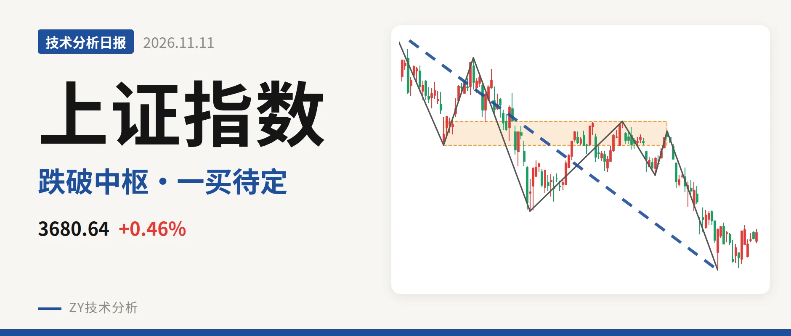
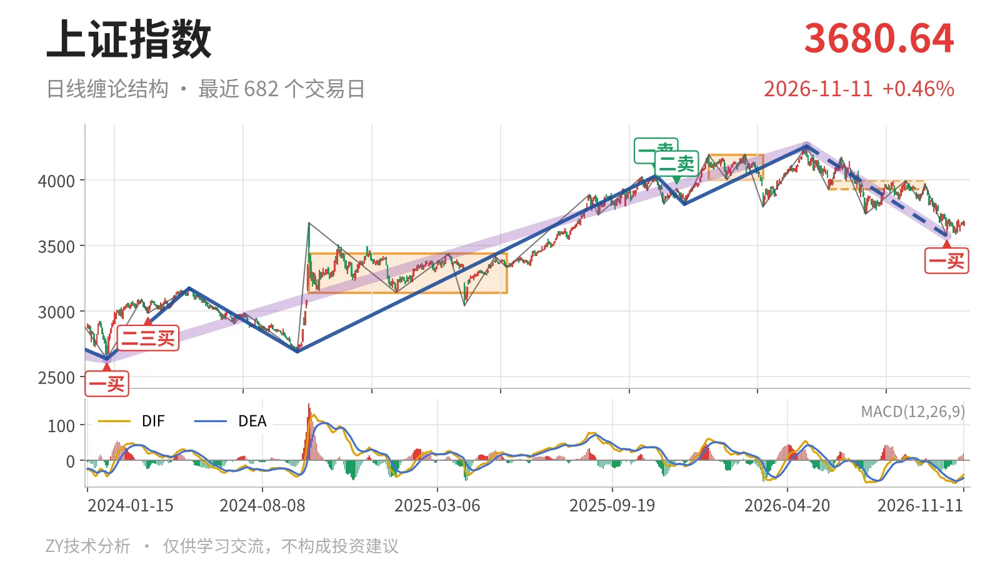
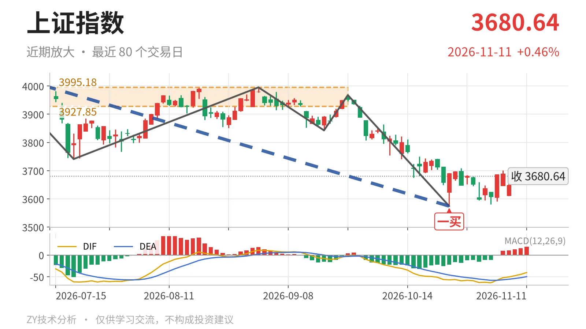

上证指数｜跌破日线中枢，3574点一买反弹未成笔

最近日线中枢 3927.85—3995.18点，收盘位于中枢之下
一句话：日线下跌段未结束，价格在最近笔中枢下方，反弹尚未成笔。
📉 走势结构：日线下跌段未结束，反弹未破坏下跌
当前日线仍处在5月14日以来的下跌段里，该段从4258.86点跌至3574.27点，跌幅约16.1%，仍在延续。10月23日以后只走出来一段未成笔的反弹，最高3708.20点，没有改变日线线段方向。更大级别看，2024年2月5日至2026年5月14日的上涨段尚不能判定结束，当前更像上涨后的深调；但这次调整已经击穿最近日线笔中枢，不是浅调。

🧭 中枢与位置：跌破最近笔中枢，中枢台阶下移
最新收盘 3680.64点 低于6月8日至9月22日日线笔中枢下沿 3927.85点 约6.3%，该中枢区间为3927.85—3995.18点，尚未完成。它整体低于1月14日至3月23日的4002.78—4190.87点中枢，属中枢下移。价格停在中枢下方，说明6月以来的横盘结构被向下破坏；下方2021年7月28日至2023年5月9日线段中枢3312.72—3418.95点仍远，长期重心没有完全丢失。
🎯 买卖点：卖点逐级压低，一买暂未升级
日线笔级别卖点一个比一个低：2025年11月14日一卖4034.08点，2025年12月8日二卖3936.31点。9月1日反弹高点3995.18点未回到4034点上方，上述卖点仍对应日线笔级别。10月23日一买 3574.27点 来自9月22日至10月23日下跌笔，该笔已经结束；之后10月26日至11月11日反弹仅13根K线，最高3708.20点、最低3580.38点，尚未成笔，也未再破一买低点。因此这个一买目前只是笔级转折，未升级为线段级转折。

⚖️ 背驰：新低未形成标准底背驰
9月22日至10月23日下跌笔对比6月23日至7月20日下跌笔，价格由3741.11点续创新低至3574.27点，DIF低点从-61.8抬到-57.1，绿柱面积却从289扩大到347。价格新低、DIF低点抬高、绿柱面积放大，三者没有形成底背驰共振，日线级别看不到标准底背驰。最新DIF仍在零轴下方，柱值19.0，反弹动能受压。3574点一买更偏小级别背驰触发，而非日线线段底背驰。
🔎 关键位置观察：反抽3928点、跌破3574点定强弱
后续反抽若成一笔且回不到 3928点 上方，结构上构成对6月8日至9月22日笔中枢的三卖风险。重新站上 3995点，则回落更可能只是中枢扩展。下方若跌破 3574点，10月23日一买就只对应更小级别，下跌段继续延伸。当前结构偏弱，弱在三点：价格位于最近笔中枢下方、反弹尚未成笔、下跌段未结束。偏强修复的结构路径是先站回3928点；若持续在3928点下方运行，日线下跌段没有结束信号。
⚠️ 本文为基于公开行情数据的缠论技术结构记录，由程序自动计算并生成，仅供学习交流，不构成任何投资建议。市场有风险，投资需谨慎。